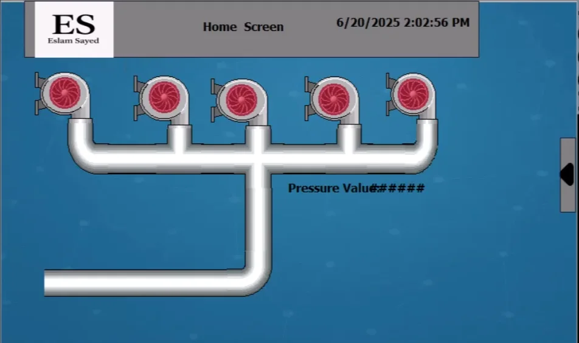
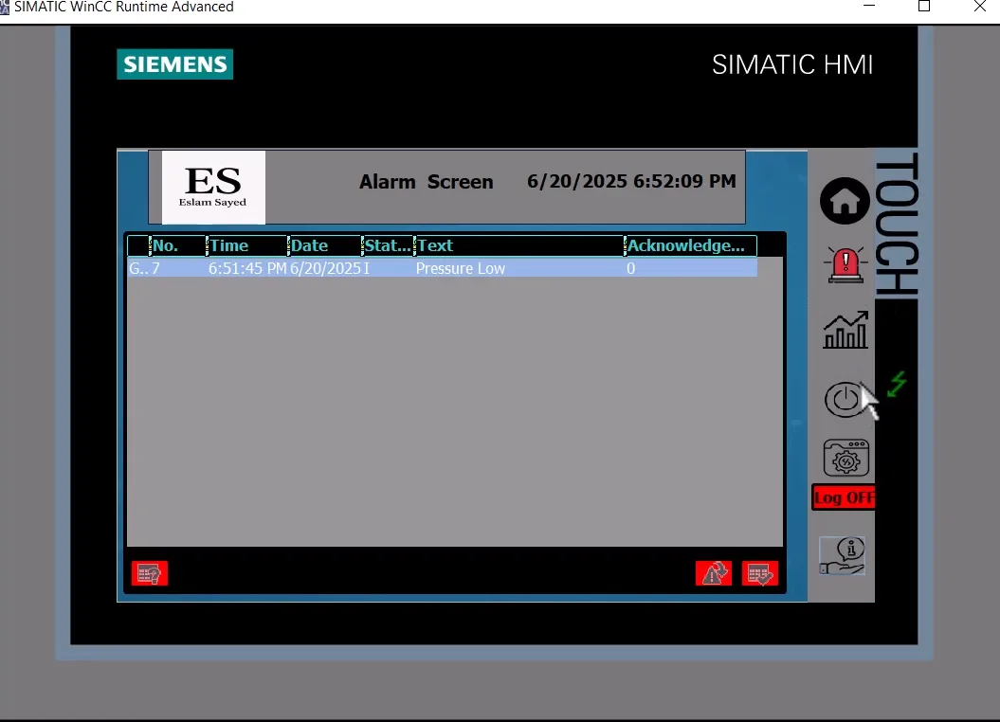
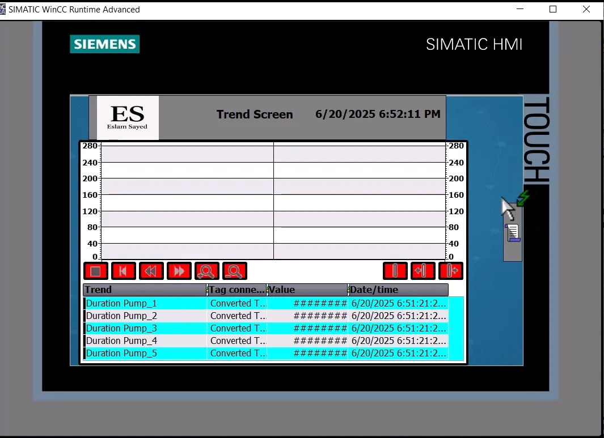
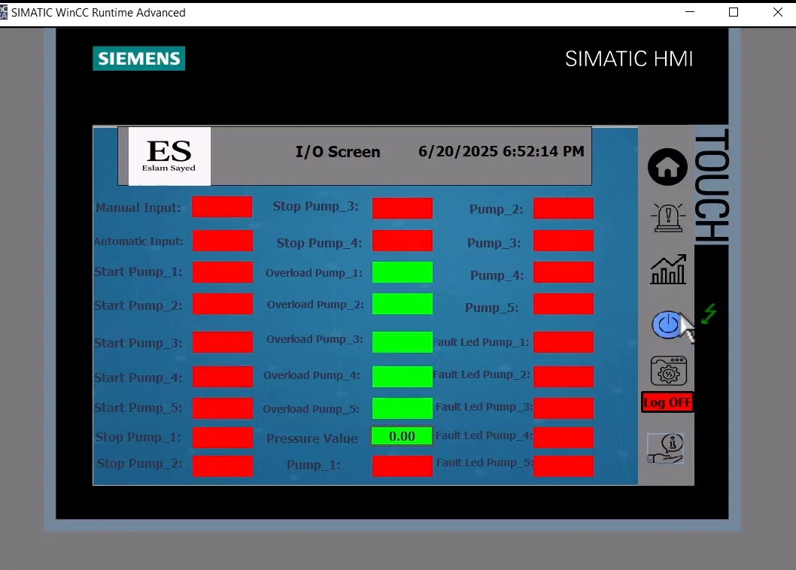
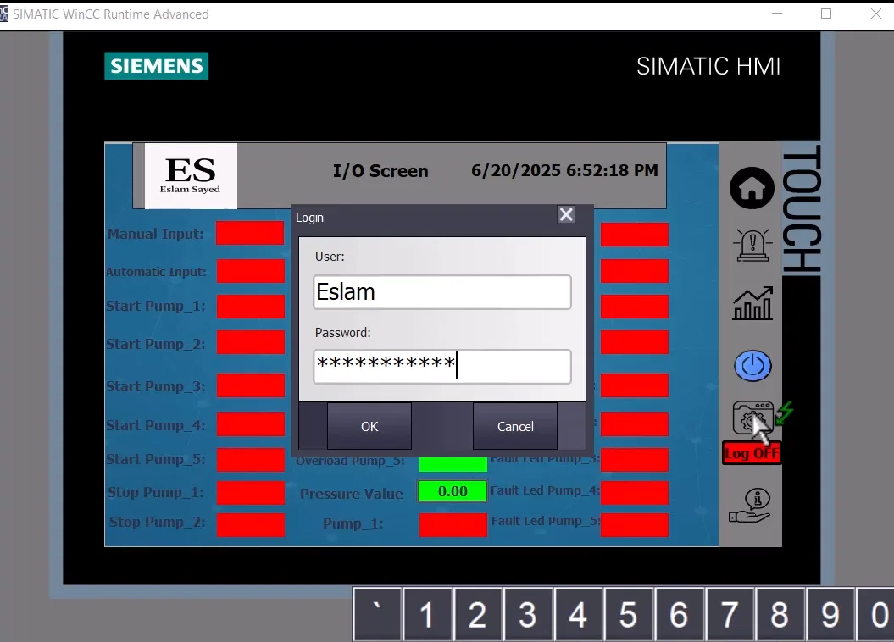
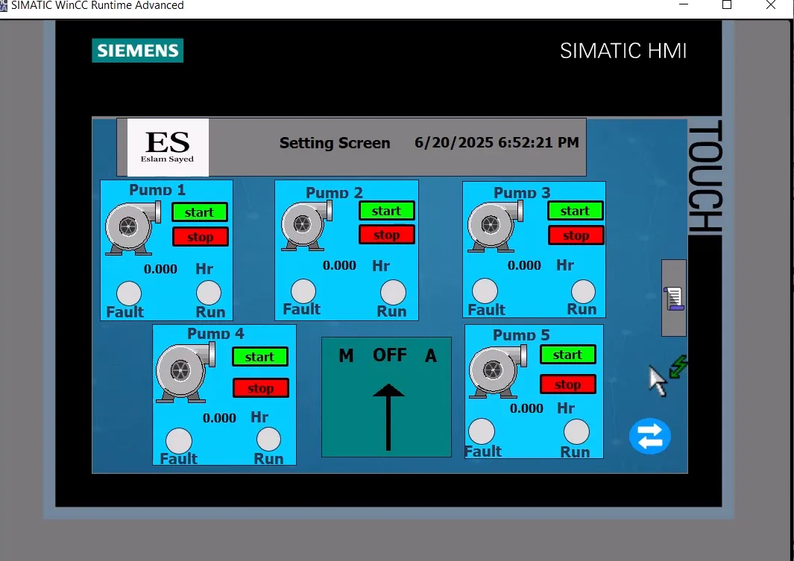
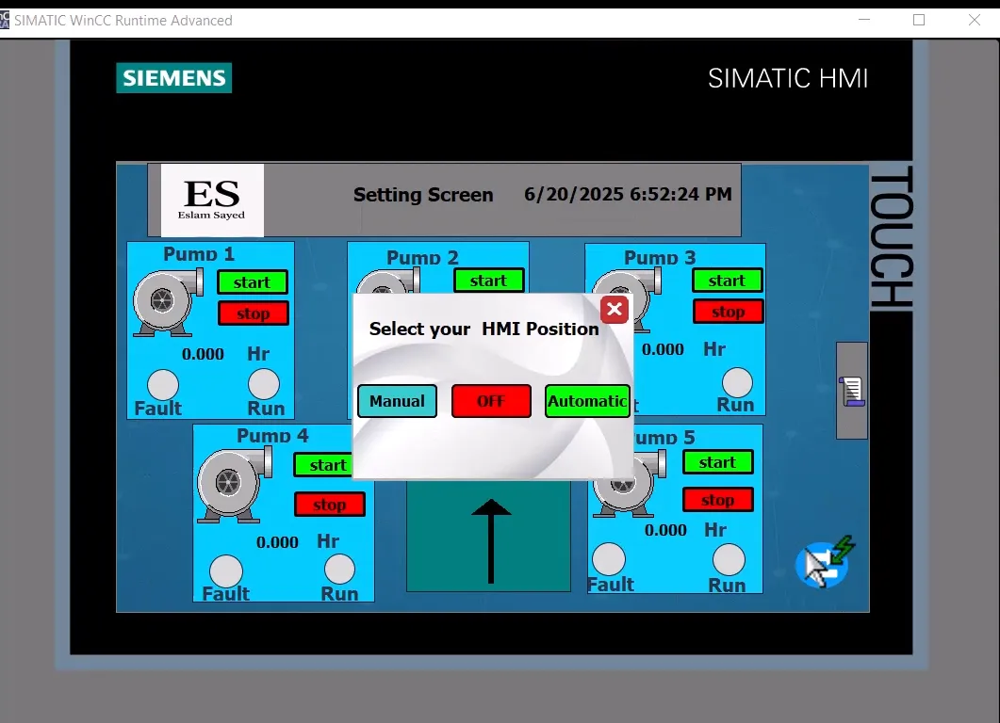
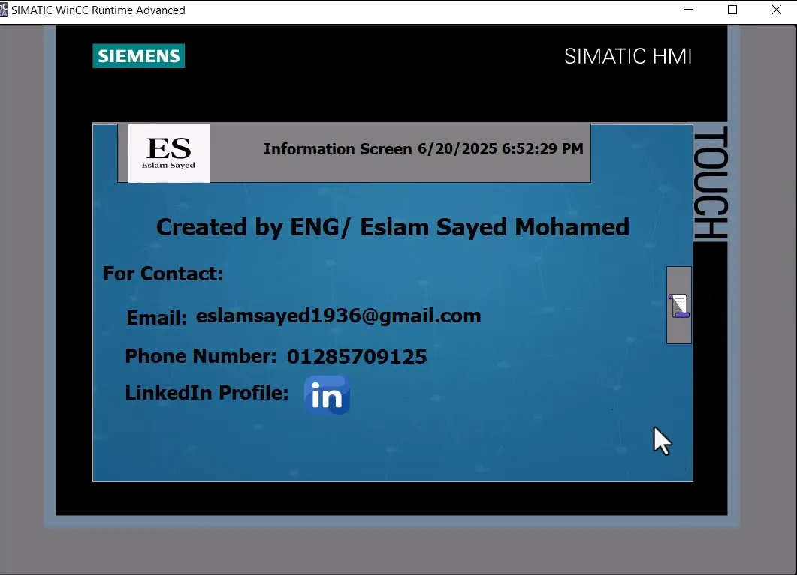
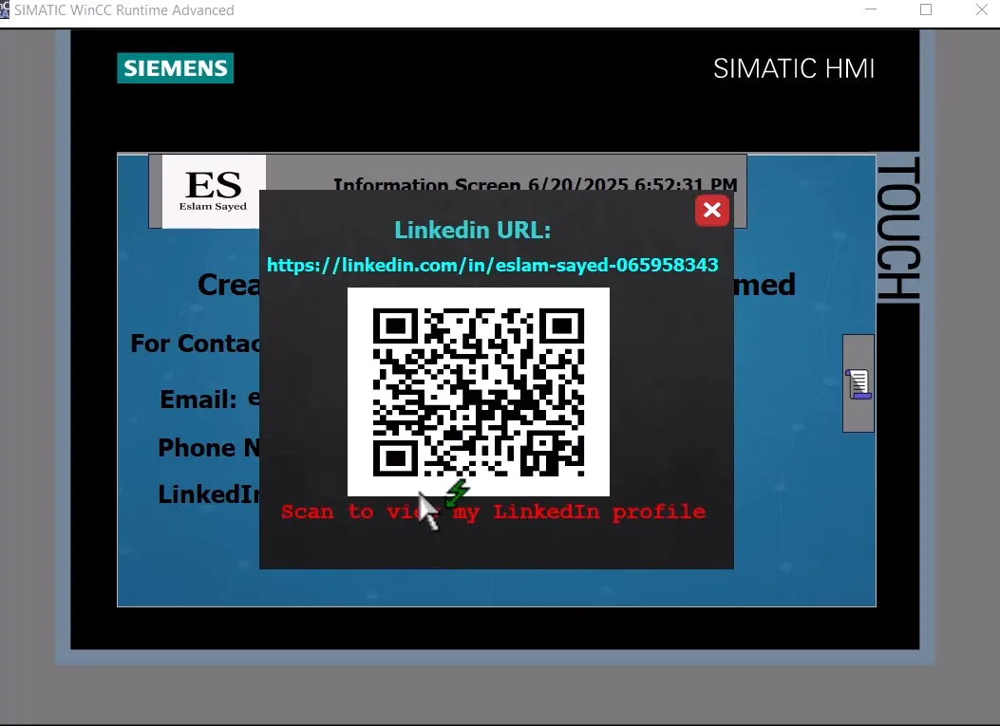

Smart Water Pumping Station
🚰 Water Pumping Station Control System
This project focuses on designing an automated control system for a water lifting station that utilizes 5 pumps—4 operating and 1 as a standby. The station is managed through a Siemens PLC and HMI interface, with a logic-based control system that optimizes pressure levels and pump utilization over time.
🛠️ My Role
- Programming the PLC to manage all automatic and manual operations of the pumping system.
- Developing the HMI interface, including advanced features such as a manual override popup screen that allows users to operate pumps manually from the HMI in case of external pushbutton failure.
- Simulating runtime rotation by reducing the actual standby switching logic (normally triggered every 72 hours) to 20 seconds in the simulation video for clarity and demonstration purposes.
💡 System Logic Overview
The system operates in two main modes:
1. Manual Mode- Each pump is controlled individually through selector switches.
- Start/Stop buttons on the panel are active only in this mode.
- Run and Fault indicator lamps are available for each pump.
- Overload protection is provided for each motor; a fault lamp activates upon overload detection.
- A pressure transmitter (4–20 mA) measures system pressure in bar (0–10 bar).
- Based on the pressure reading, the system determines how many pumps should be running:
| Pressure Range (bar) | Active Pumps |
|---|---|
| 0 – 2.5 | 4 Pumps |
| 2.5 – 5 | 3 Pumps |
| 5 – 7.5 | 2 Pumps |
| 7.5 – 10 | 1 Pump |
🔁 Intelligent Standby Pump Rotation
To ensure fair usage across all pumps, the system logs each pump's cumulative runtime. When a pump reaches 72 hours, it is rotated out and replaced with the standby unit. This logic maintains even load distribution and extends equipment life.
⚙️ Note: In simulation, the 72-hour counter was reduced to 20 seconds to showcase this rotation clearly.
🔧 Components Involved
- PLC: Siemens S7 series
- HMI: Siemens TP900
- Pressure Sensor: 0–10 bar, 4–20 mA output
- Manual Selector Switches, Start/Stop Push Buttons, Indicator Lamps
- Overload Relays for motor protection
- Pumps: 5 units (4 main + 1 standby)
📷 Image Gallery







